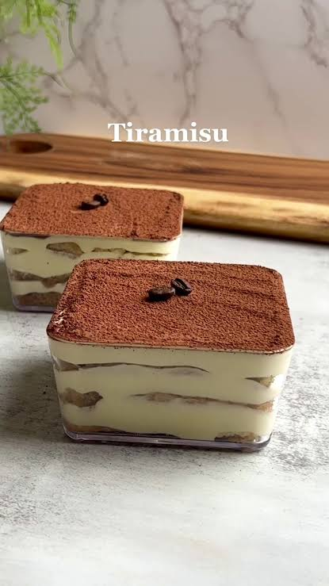

Tiramisu

Description
TIRAMISU IS A SOMETHING SOMETHING SOMETHING
THIS IS TIRAMISU PARAGRAPH 2
Ingredients
- 5 eggs
- mascarpone(more than 500 gms)
- vanilla extract
- lady fingers
- coffee of your choice
- cocoa powder
Steps
- separate 5 eggs, and place the egg yolks in a bowl
- add 5 tablespoons of sugar
- mix until pale yellow and smooth
- add around 500gms of mascarpone
- a splash of vanilla extract
- stir until the mixture is creamy and fully combined
- Whip egg whites(with a electrical mixer) until stiff peaks (make sure it is really stiff ..)
- add mascarpone mixture to the bottom of a square pan
- add a row of lady fingers dipped in coffee
- add another layor of mascarpone on top of that
- repeat until you see fit.
- refrigerate overnight
- when ready to serve, dust generously with cocoa powder
YAY